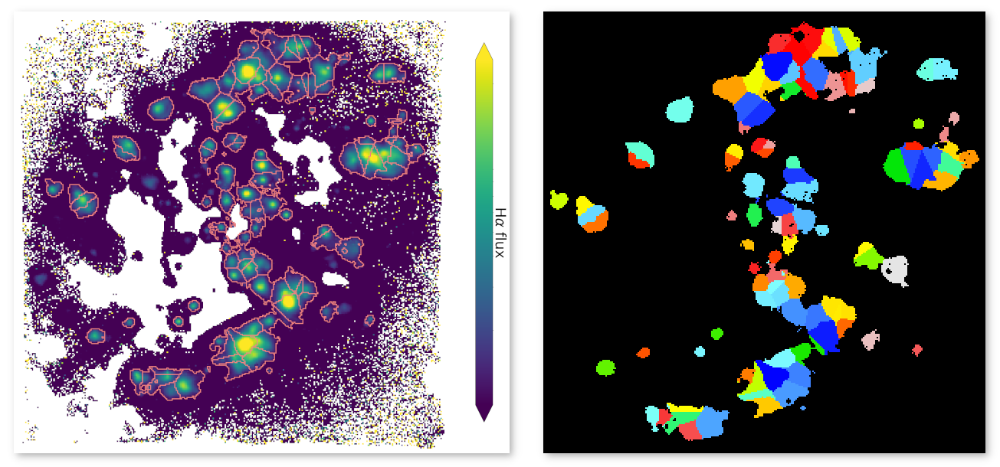

{kind=link}
HIIdentify¶


Welcome to HIIdentify! This code identifies HII regions within a galaxy, using a map of the H \(\alpha\) emssion line flux.
Please note, HIIdentify is under active development - any contributions and / or feedback would be very welcome.
HIIdentify works by identifying the brightest pixels within the image, then growing the region to include the surrounding pixels with fluxes greater than the specified background flux, up to a maximum size. Where regions merge, the distance from the merging pixels to the peaks of the two regions are considered, and the pixel is assigned to the region with the closest peak.
In the below example map (left), the flux of the H \(\alpha\) emission line can be seen, with the highest flux regions show in yellow, and lowest flux regions in purple. The regions identfied by HIIdentify can be seen as the red outlines. Here it can be seen that the regions are not restricted to being a particular shape, and that all regions with a peak flux above a given limit have been identified.
In the right-hand image, the segmentation map returned by HIIdentify can be seen. A 2D map is returned, with all pixels corresponding to a particular HII region set to the ID number of the region. This allows the segmentation map to be used to mask out regions of maps of other parameters, such as line fluxes or metallicity maps, pertaining to the selected HII region.
Installing HIIdentify¶
HIIdentify can be found on PyPI, and installed using pip, by running:
pip install HIIdentify
Using HIIdentify¶
How to cite HIIdentify¶
If you use HIIdentify as part of your work, please cite Easeman et al. (2022) in prep.